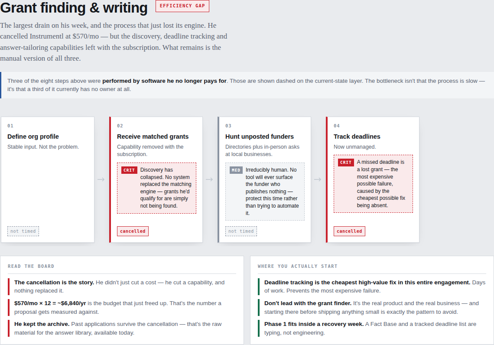

The Problem
Most "here's where AI can help you" conversations start from a guess. Either AI gets pitched everywhere, or a client reflexively distrusts it — and neither is grounded in how the organization actually operates day to day.
The real risk sits on the consultant's side: proposing a "future state" that's just today's process with an AI logo taped on top. That's the fastest way to lose a client's trust — and it happens when a discovery call turns into a wishlist instead of a diagnosis.
What was missing was a repeatable method: one that captures how work happens in the client's own words, holds every claimed pain point to a number they actually stated — never an invented one — and tells them plainly which processes are healthy and shouldn't be touched.
What I Built
The audit itself ran the way audits actually happen: a real conversation, not software. I sat down with the Executive Director of a small, founder-run nonprofit for 90 minutes and mapped five core workflows — grant finding & writing, sponsorship development, a ticket-sale push, a weekly content process, and the org's annual program cycle. Every duration on the map is a number he stated out loud; every step he didn't quantify is marked as an open question, never a guess. That discipline — never inventing a number — is the whole point of the method, and it's visible in the map itself, below.
From that audit I built two things. The first is a client-specific diagnostic — the process map built directly from his numbers, shown in See It In Action below. The second is the reusable version: I extracted the method into the Audit Kit, a self-contained, multi-client discovery instrument built as a Claude Artifact, so the next audit runs the same rigorous process without starting from a blank page:
| Tab | What It Does |
|---|---|
| Prep | Discovery-call script, the five things to capture per step, and the gap-classification key — used before and during the meeting |
| Capture | A live table built for typing while someone talks: current state, then diagnosis, then future design, in three separate passes |
| Present | The client-facing view — current-state, bottleneck, and future-state process maps, plus a time-distribution bar showing where the hours actually go |
| Opportunities | A scored backlog (Impact × 1.5 + Breadth + Pull × 1.2, divided by Lift) that separates real projects from favors |
| Export | Generates a Markdown brief or JSON backup — nothing leaves the browser until it's exported |
It's client-agnostic by design: a new audit switcher for the next organization, not a rebuild.
The Result
Running the real audit surfaced findings a generic AI pitch would never have found.
| Finding | What the Map Showed |
|---|---|
| A cancelled tool took capability with it, silently | The client had cancelled a $570/month grant-research subscription (~$6,840/year) — but 3 of the 8 steps in the grant-finding process were performed by that software. Nothing replaced them, and it hadn't been named as a gap until the map made it visible. |
| The strongest asset was going unmeasured | The client's personal outreach and media presence — genuinely their best skill — had no tracked link, no call to action, and no cadence behind it, six days before a ticket-sale deadline. |
| One process needed nothing | The weekly content post was precisely timed (about an hour, in season) and working fine. The map recommended leaving it alone — a finding in its own right, and the credibility that makes the other findings believable. |
| The size of every fix was legible, not aspirational | The future-state map phased fixes by build size — a deadline tracker and answer library sized at days of work, a full grant-discovery engine explicitly parked as a separate, much larger build. |
No visibility into where the org's own hours went
A reusable instrument that runs the next audit in a fraction of the time
See It In Action
This is the client-specific map built directly from the Jet Award Foundation audit — the grant-finding process, flagged as an efficiency gap. Steps the client never put a number on are marked not timed rather than estimated; the steps a cancelled $570/month tool used to handle are marked cancelled. The flagged priority: "Deadline tracking is the highest-value fix on this map — a missed deadline is a lost grant, and it's also the cheapest gap to close."

Why It Matters
Skills demonstrated: AI workflow design (mapping and rebuilding a real process with AI embedded) · AI readiness assessment (evaluating an org, classifying gaps, prioritizing a roadmap) · AI process documentation (a written, transferable methodology) · Claude platform expertise (Artifacts, structured prompting, browser-persisted client tooling).
Let's Talk
Want to see how this method would map your team's own workflows?
cameronndudley1@gmail.com Back to Home